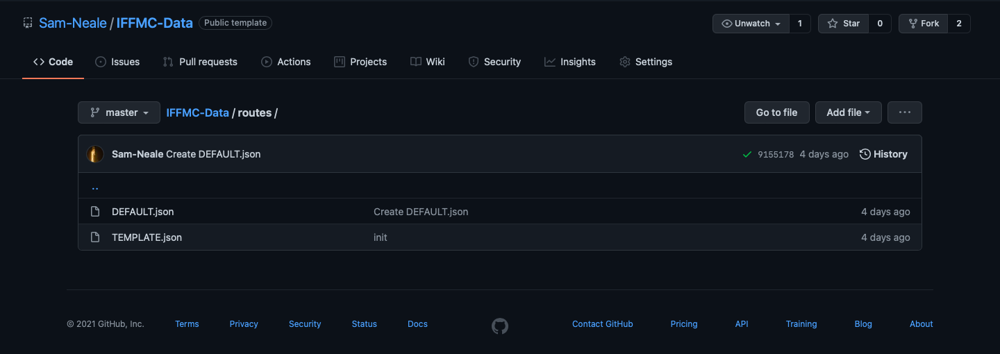
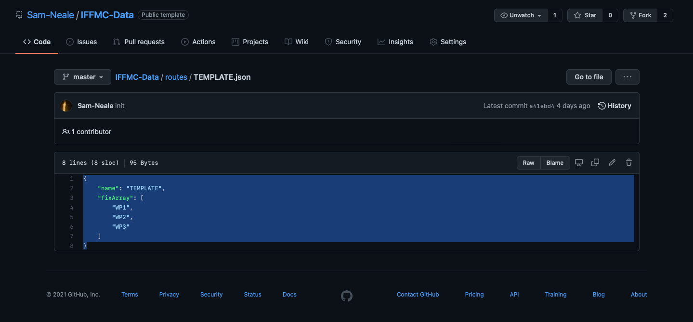
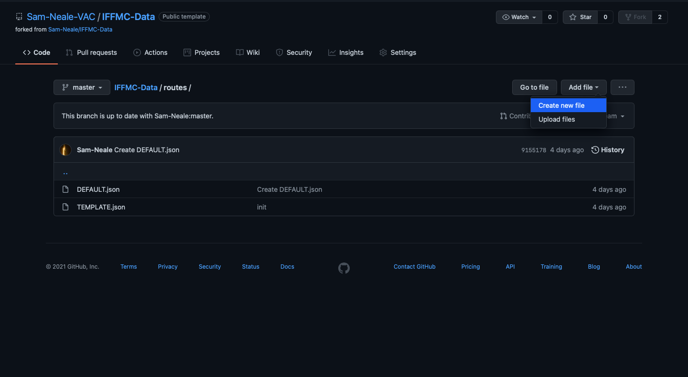
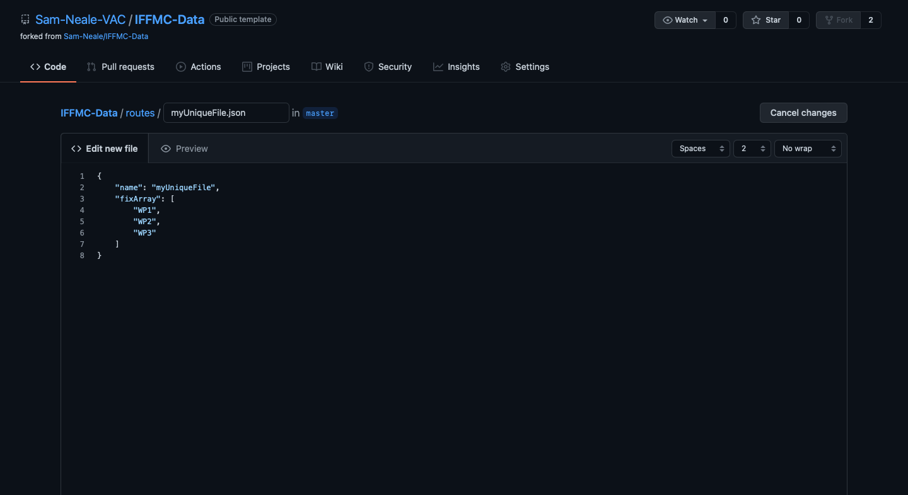
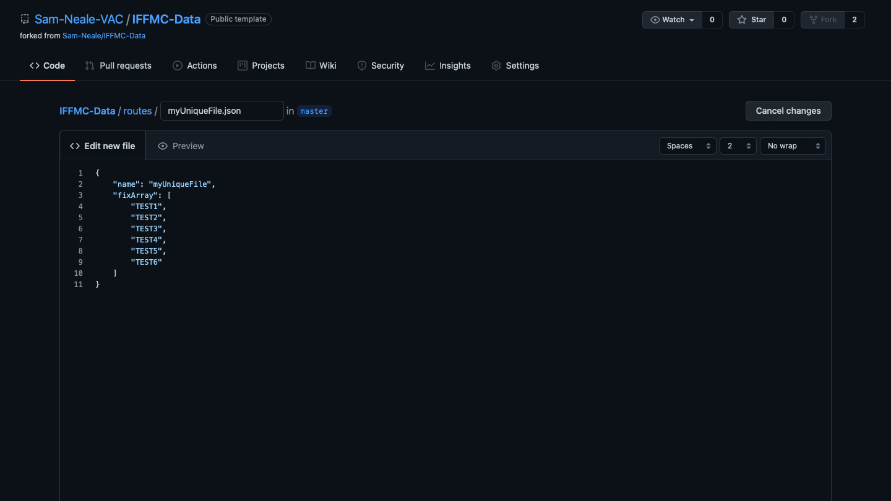
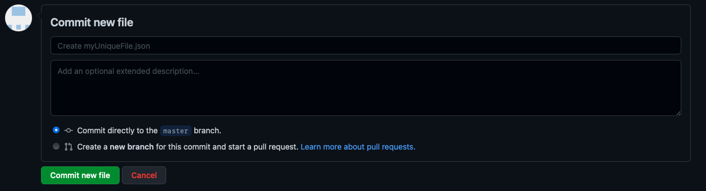
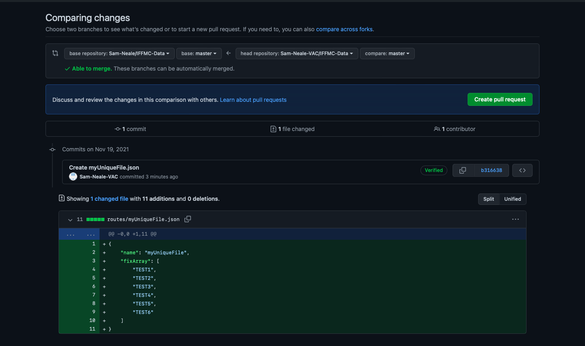

Note: The documentation is very bare bones at the minute, and will be expanded upon at a future date.
The guidlines below indicate how to add a route to the database.
Click the following link: https://github.com/Sam-Neale/IFFMC-Data/tree/master/routes, you should see something like the following:
Open the TEMPLATE.JSON file, and copy the contents of the file.
Go back to the folder in step 1. Click the fork button in the top right corner of the page. Once the fork is created (Github Account required), make sure you are back in the routes folder, then click Add file, Create new File
Once you create the file, name it a unique name that has not been used by any prior file, you should include the .json extension. In the Edit new file area, paste the contents from the template. Set the name to be the same as the file, just without the .json extension.
Now that all the core information is done, we can get to the fun part, adding the waypoints. Using the template, add the waypoint names to the list. Make sure that all waypoints (except the last one) have a comma after the last quotation mark.
After creating the list, scroll down to the bottom of the page and click the button. Adding comments in the title or description are optional and up to you. Make sure the Commit directly to the master branch option is selected.
Following saving changes, you need to send them for review. On the row containing options such as Code, Pull requests, Actions, etc, click the the Pull requests tab.
Once on the pull requests page, click , you should then be presented with something like below. Click again.
Your route is awaiting approval from staff, you should recieve an email when it is approved/denied, allow 5-10 minutes to show up in IFFMC.
The guidlines below indicate how to add a route to the database.
Click the following link: https://github.com/Sam-Neale/IFFMC-Data/tree/master/routes, you should see something like the following:
Open the TEMPLATE.JSON file, and copy the contents of the file.
Go back to the folder in step 1. Click the fork button in the top right corner of the page. Once the fork is created (Github Account required), make sure you are back in the routes folder, then click Add file, Create new File
Once you create the file, name it a unique name that has not been used by any prior file, you should include the .json extension. In the Edit new file area, paste the contents from the template. Set the name to be the same as the file, just without the .json extension.
Now that all the core information is done, we can get to the fun part, adding the waypoints. Using the template, add the waypoint names to the list. Make sure that all waypoints (except the last one) have a comma after the last quotation mark.
After creating the list, scroll down to the bottom of the page and click the button. Adding comments in the title or description are optional and up to you. Make sure the Commit directly to the master branch option is selected.
Following saving changes, you need to send them for review. On the row containing options such as
Code, Pull requests, Actions, etc, click the the
Pull requests tab.
Once on the pull requests page, click , you should then be presented with something like below. Click again.
Your route is awaiting approval from staff, you should recieve an email when it is approved/denied, allow 5-10 minutes to show up in IFFMC.